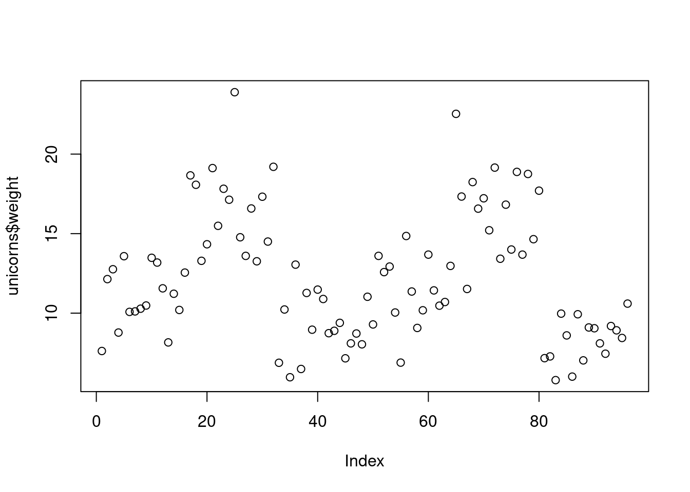
4 Figures
Summarising your data, either numerically or graphically, is an important (if often overlooked) component of any data analysis. Fortunately, R has excellent graphics capabilities and can be used whether you want to produce plots for initial data exploration, model validation or highly complex publication quality figures. There are three main systems for producing graphics in R; base R graphics, lattice graphics and ggplot2.
The base R graphics system is the original plotting system that’s been around (and has evolved) since the first days of R. When creating plots with base R we tend to use high level functions (like the plot() function) to first create our plot and then use one or more low level functions (like lines() and text() etc) to add additional information to these plots. This can seem a little weird (and time consuming) when you first start creating fancy plots in R, but it does allow you to customise almost every aspect of your plot and build complexity up in layers. The flip side to this flexibility is that you’ll often need to make many decisions about how you want your plot to look rather than rely on the software to make these decisions for you. Having said that, it’s generally very quick and easy to generate simple exploratory plots with base R graphics.
The lattice system is implemented in the lattice() package that comes pre-installed with the standard installation of R. However, it won’t be loaded by default so you’ll first need to use library(lattice) to access all the plotting functions. Unlike base R graphics, lattice plots are mostly generated all in one go using a single function so there’s no need to use high and low level plotting functions to customise the look of a plot. This can be a real advantage as things like margin sizes and plot spacing are adjusted automatically. Lattice plots also make a few more decisions for you about how the plots will look but this comes with a slight cost as customising lattice plots to get them to look exactly how you want can become quite involved. Where lattice plots really shine is plotting complex multi-dimensional data using panel plots (also called trellis plots). We’ll see a couple of examples of these types of plots later in the Chapter.
ggplot2 was based on a book called Grammar of Graphics by Wilkinson (2005). For an interesting summary of Wilkinson’s book [here][leland-summary]. The Grammar of Graphics approach breaks figures down into their various components (e.g. the underlying statistics, the geometric arrangement, the theme, see Figure 4.1). Users are thus able to manipulate each of these components (i.e. layers) and produce a tailor-made figure fit for their specific needs.

Each of these systems have their strengths and weaknesses and we often use them interchangeably. In this Chapter we’ll introduce you to the both base R plotting function and theggplot2 package. It’s important to note that ggplot2 is not required to make “fancy” and informative figures in R. If you prefer using base R graphics then feel free to continue as almost all ggplot2 type figures can be created using base R (we often use either approach depending on what we’re doing). The difference betweenggplot2 and base R is how you get to the end product rather than any substantial differences in the end product itself. This is, never-the-less, a common belief probably due to the fact that making a moderately attractive figure is (in our opinion at least), easier to do with ggplot2 as many aesthetic decisions are made for the user, without you necessarily even knowing that a decision was ever made!
With that in mind, let’s get started making some figures.
4.1 Simple base R plots
There are many functions in R to produce plots ranging from the very basic to the highly complex. It’s impossible to cover every aspect of producing graphics in R in this book so we’ll introduce you to most of the common methods of graphing data and describe how to customise your graphs later on in Section 4.5.
The most common high level function used to produce plots in R is (rather unsurprisingly) the plot() function. For example, let’s plot the weight of unicorns from our unicorns data frame which we imported in Section 3.3.2.
R has plotted the values of weight (on the y axis) against an index since we are only plotting one variable to plot. The index is just the order of the weight values in the data frame (1 first in the data frame and 97 last). The weight variable name has been automatically included as a y axis label and the axes scales have been automatically set.
If we’d only included the variable weight rather than unicorns$weight, the plot() function will display an error as the variable weight only exists in the unicorns data frame object.
plot(weight)
## Error in plot(weight) : object 'weight' not foundAs many of the base R plotting functions don’t have a data = argument to specify the data frame name directly we can use the with() function in combination with plot() as a shortcut.
To plot a scatterplot of one numeric variable against another numeric variable we just need to include both variables as arguments when using the plot() function. For example to plot fluffyness on the y axis and weight of the x axis.
plot(x = unicorns$weight, y = unicorns$fluffyness)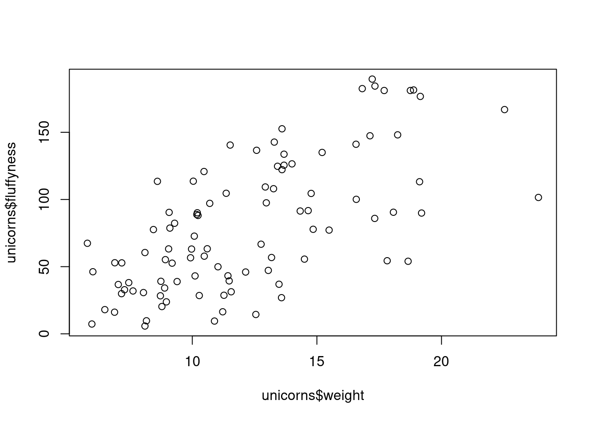
There is an equivalent approach for these types of plots which often causes some confusion at first. You can also use the formula notation when using the plot() function. However, in contrast to the previous method the formula method requires you to specify the y axis variable first, then a ~ and then our x axis variable.
plot(fluffyness ~ weight, data = unicorns)
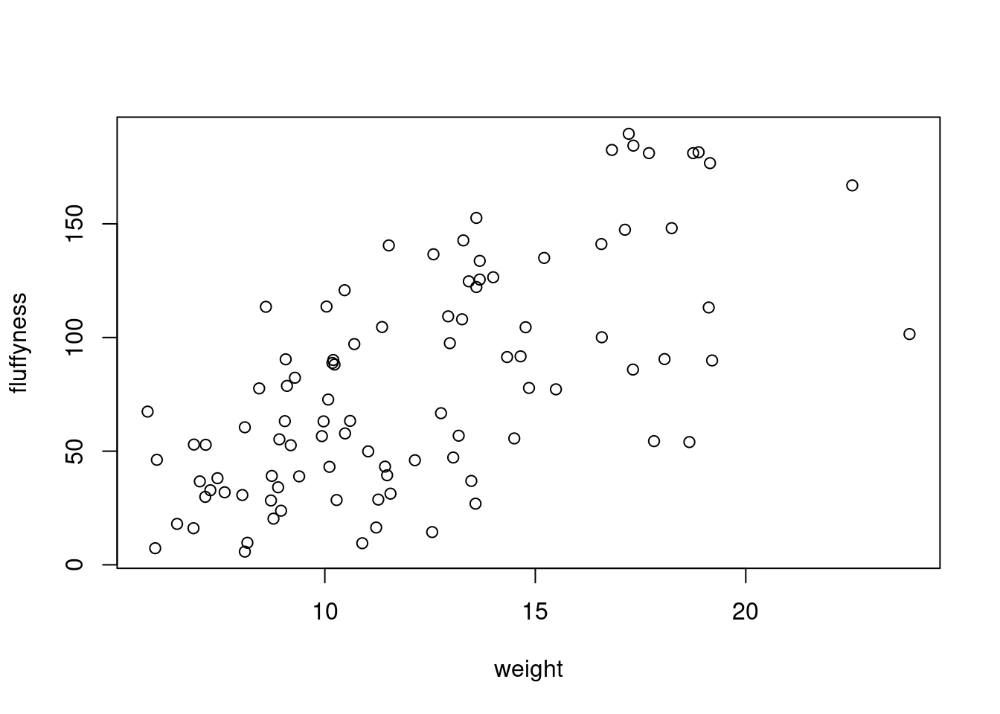
Both of these two approaches are equivalent so we suggest that you just choose the one you prefer and go with it.
You can also specify the type of graph you wish to plot using the argument type =. You can plot just the points (type = "p", this is the default), just lines (type = "l"), both points and lines connected (type = "b"), both points and lines with the lines running through the points (type = "o") and empty points joined by lines (type = "c"). For example, let’s use our skills from Section 2.4 to generate two vectors of numbers (my_x and my_y) and then plot one against the other using different type = values to see what type of plots are produced. Don’t worry about the par(mfrow = c(2, 2)) line of code yet. We’re just using this to split the plotting device so we can fit all four plots on the same device to save some space. See Section 4.4 in the Chapter for more details about this. The top left plot is type = "l", the top right type = "b", bottom left type = "o" and bottom right is type = "c".
my_x <- 1:10
my_y <- seq(from = 1, to = 20, by = 2)
par(mfrow = c(2, 2))
plot(my_x, my_y, type = "l")
plot(my_x, my_y, type = "b")
plot(my_x, my_y, type = "o")
plot(my_x, my_y, type = "c")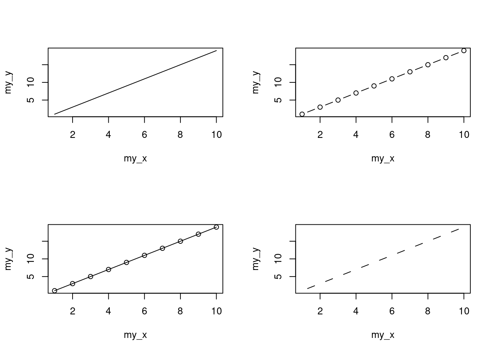
Admittedly the plots we’ve produced so far don’t look anything particularly special. However, the plot() function is incredibly versatile and can generate a large range of plots which you can customise to your own taste. We’ll cover how to customise ggplots in Section 4.5. As a quick aside, the plot() function is also what’s known as a generic function which means it can change its default behaviour depending on the type of object used as an argument. You will see an example of this in Section 9.6 where we use the plot() function to generate diagnostic plots of residuals from a linear model object (bet you can’t wait!).
4.2 ggplot2
As mentioned earlier ggplot grammar requires several elements to produce a graphic (Figure 4.1) and a minimum of 3 are required:
- a data frame
- a mapping system defining x and y
- a geometry layer
The data and mapping are provided within the called to the ggplot() function with the data and mapping arguments. The geometry layer is added using specific functions.
In fact all layers are needed but default simple values of the other layers are automatically provided.
To redo the Figure 4.2, that contain only a scatterplot of point we can use the geom_point() function.
ggplot(
data = unicorns,
mapping = aes(x = weight, y = fluffyness)
) +
geom_point()
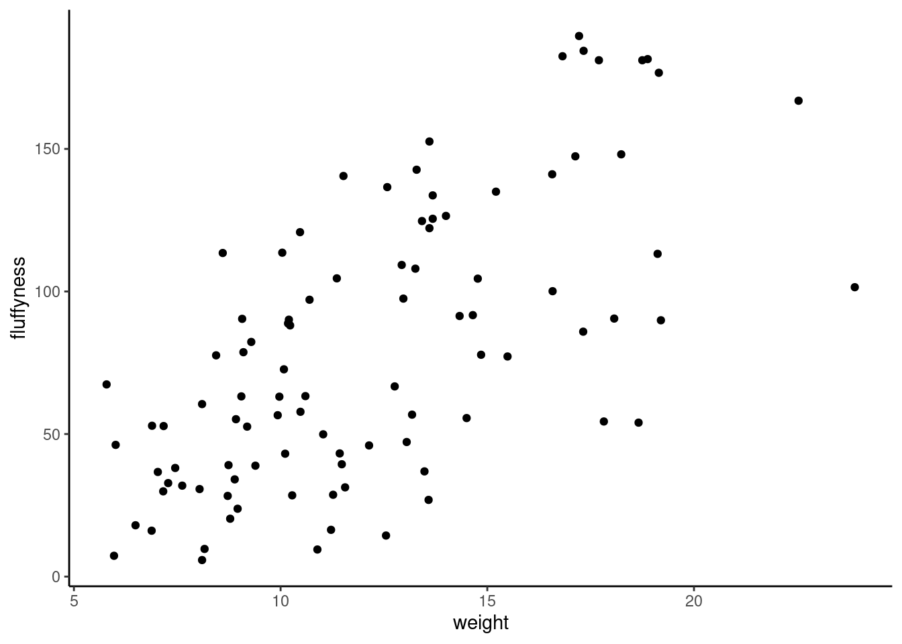
Now that we have basic understanding of ggplotwe can explore some graphics using both base R and ggplot code
4.3 Simple plots
4.3.1 Scatterplots
Simple type of plots really useful to have a look at the relation between 2 variables for example. Here are the code to do it using base R (Figure 4.2)
plot(fluffyness ~ weight, data = unicorns)or ggplot (Figure 4.3)
ggplot(
data = unicorns,
mapping = aes(x = weight, y = fluffyness)
) +
geom_point()One gig advantage of ggplot for simple scatterplot is the ease with which we can add a regression, smoother (loes or gam) line to the plot using stat_smooth()function to add a statistic layer to the plot.
ggplot(
data = unicorns,
mapping = aes(x = weight, y = fluffyness)
) +
geom_point() +
stat_smooth()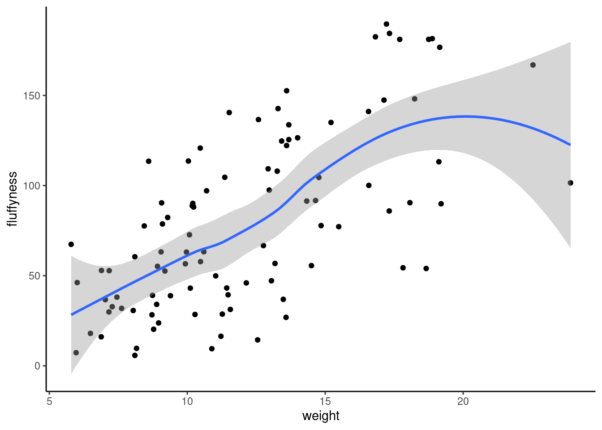
4.3.2 Histograms
Frequency histograms are useful when you want to get an idea about the distribution of values in a numeric variable. Using base R, the hist() function takes a numeric vector as its main argument. In ggplot, we need to use geom_histogram(). Let’s generate a histogram of the height values.
With base R
hist(unicorns$height)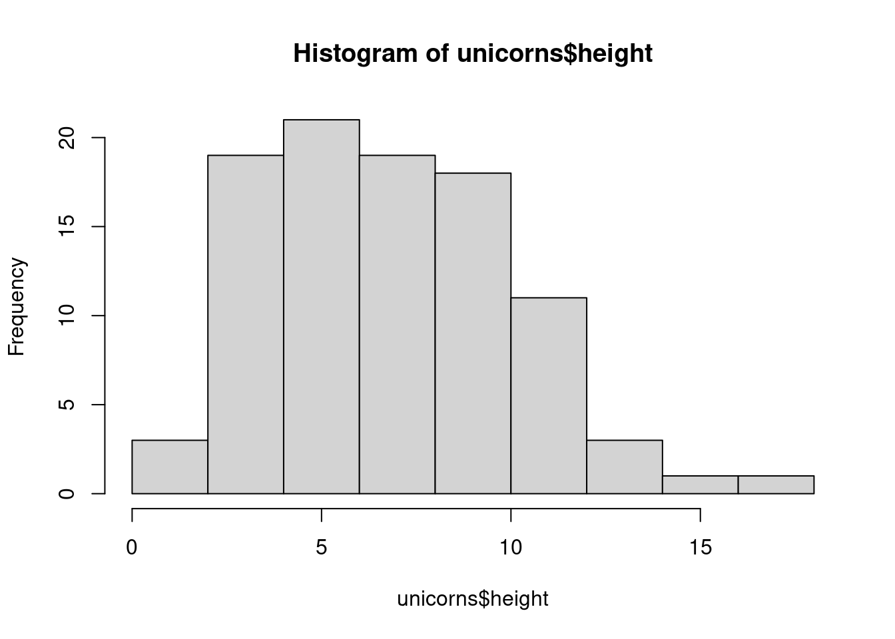
with ggplot2
ggplot(unicorns, aes(x = height)) +
geom_histogram()`stat_bin()` using `bins = 30`. Pick better value with `binwidth`.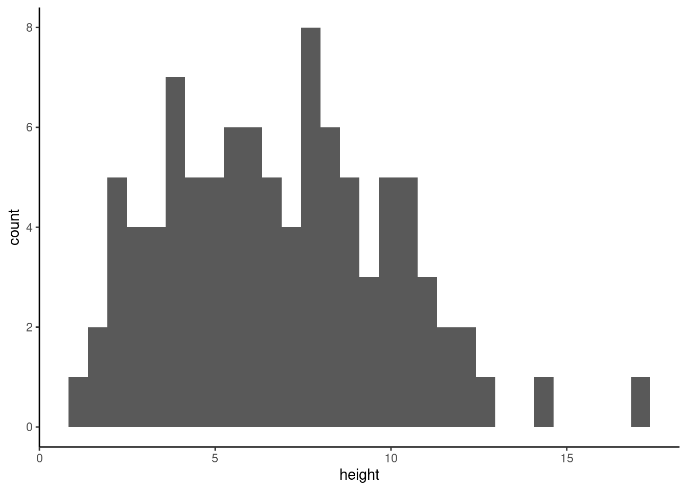
The hist() and geom_histogram() function automatically creates the breakpoints (or bins) in the histogram unless you specify otherwise by using the breaks = argument. For example, let’s say we want to plot our histogram with breakpoints every 1 cm unicorns height. We first generate a sequence from zero to the maximum value of height (18 rounded up) in steps of 1 using the seq() function. We can then use this sequence with the breaks = argument. While we’re at it, let’s also replace the ugly title for something a little better using the main = argument
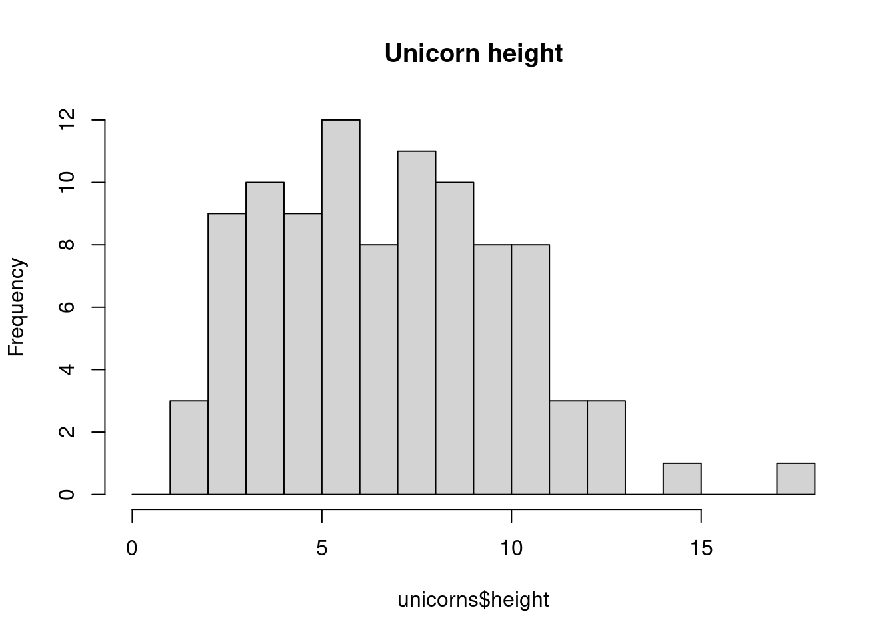
brk <- seq(from = 0, to = 18, by = 1)
ggplot(unicorns, aes(x = height)) +
geom_histogram(breaks = brk) +
ggtitle("Unicorn height")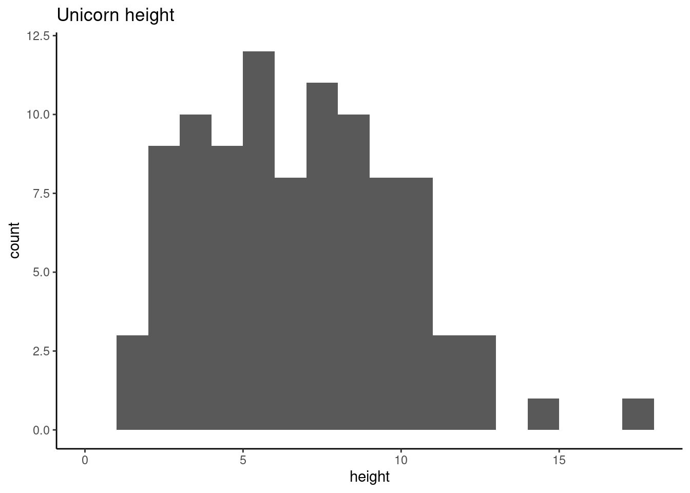
You can also display the histogram as a proportion rather than a frequency by using the freq = FALSE argument to hist() or indicating aes(y = after_stat(density)) in geom_histogram().
An alternative to plotting just a straight up histogram is to add a [kernel density][kernel-dens] curve to the plot. In base R, you first need to compute the kernel density estimates using the density() and then ad the estimates to plot as a line using the lines() function.
dens <- density(unicorns$height)
hist(unicorns$height,
breaks = brk, main = "Unicorn height",
freq = FALSE
)
lines(dens)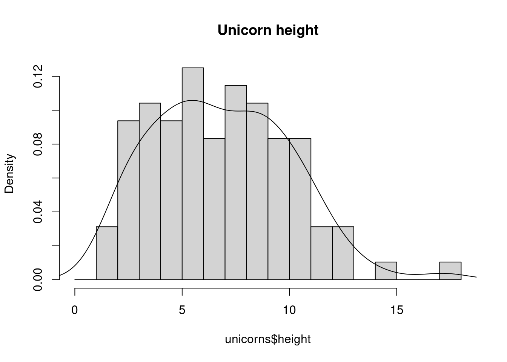
With ggplot, you can simply add the geom_density() layer to the plot
ggplot(unicorns, aes(x = height)) +
geom_histogram(aes(y = after_stat(density)), breaks = brk) +
geom_density() +
ggtitle("Unicorn height")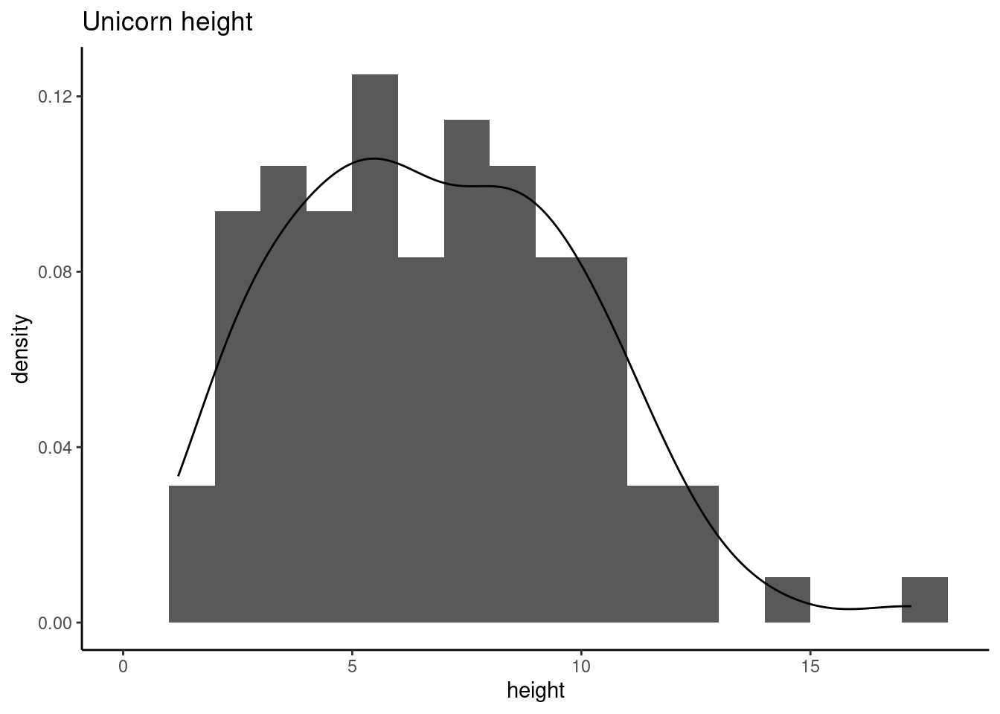
4.3.3 Box plots
OK, we’ll just come and out and say it, we love boxplots and their close relation the violin plot. Boxplots (or box-and-whisker plots to give them their full name) are very useful when you want to graphically summarise the distribution of a variable, identify potential unusual values and compare distributions between different groups. The reason we love them is their ease of interpretation, transparency and relatively high data-to-ink ratio (i.e. they convey lots of information efficiently). We suggest that you try to use boxplots as much as possible when exploring your data and avoid the temptation to use the more ubiquitous bar plot (even with standard error or 95% confidence intervals bars). The problem with bar plots (aka dynamite plots) is that they hide important information from the reader such as the distribution of the data and assume that the error bars (or confidence intervals) are symmetric around the mean. Of course, it’s up to you what you do but if you’re tempted to use bar plots just search for ‘dynamite plots are evil’ or see [here][dynamite-plot1] or [here][dynamite-plot2] for a fuller discussion.
To create a boxplot in R we use the boxplot() function. For example, let’s create a boxplot of the variable weight from our unicorns data frame. We can also include a y axis label using the ylab = argument.
boxplot(unicorns$weight, ylab = "weight (g)")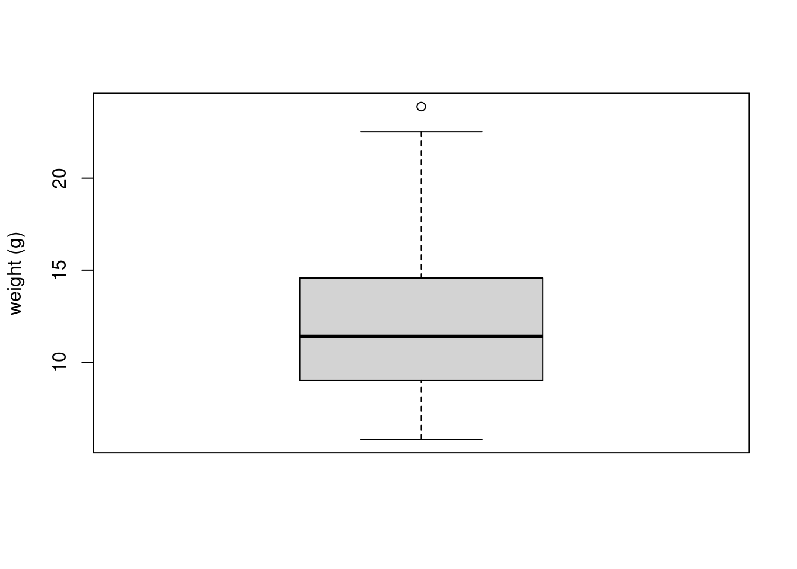
ggplot(unicorns, aes(y = weight)) +
geom_boxplot() +
labs(y = "weight (g)")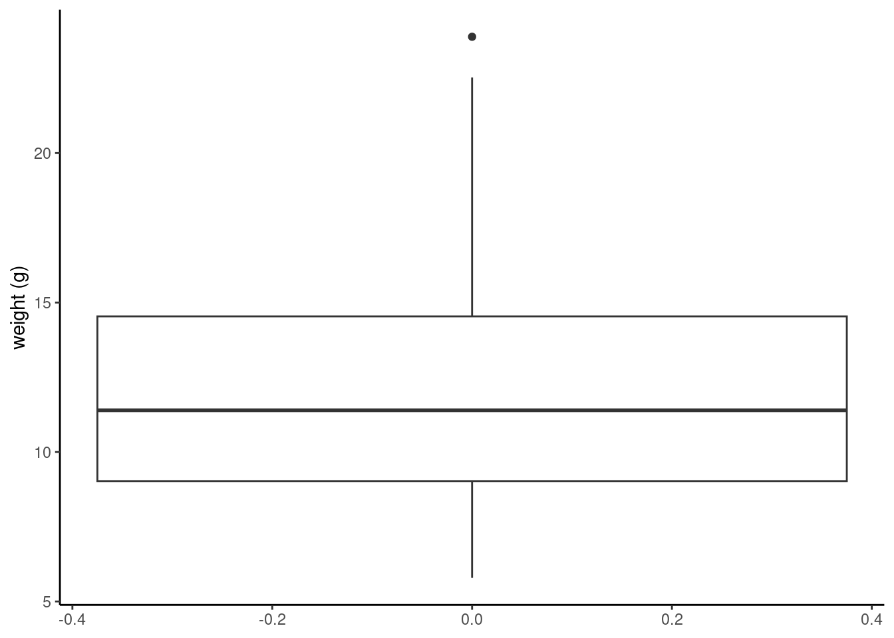
The thick horizontal line in the middle of the box is the median value of weight (around 11 g). The upper line of the box is the upper quartile (75th percentile) and the lower line is the lower quartile (25th percentile). The distance between the upper and lower quartiles is known as the inter quartile range and represents the values of weight for 50% of the data. The dotted vertical lines are called the whiskers and their length is determined as 1.5 x the inter quartile range. Data points that are plotted outside the the whiskers represent potential unusual observations. This doesn’t mean they are unusual, just that they warrant a closer look. We recommend using boxplots in combination with Cleveland dotplots to identify potential unusual observations (see the Section 4.3.5 for more details). The neat thing about boxplots is that they not only provide a measure of central tendency (the median value) they also give you an idea about the distribution of the data. If the median line is more or less in the middle of the box (between the upper and lower quartiles) and the whiskers are more or less the same length then you can be reasonably sure the distribution of your data is symmetrical.
If we want examine how the distribution of a variable changes between different levels of a factor we need to use the formula notation with the boxplot() function. For example, let’s plot our weight variable again, but this time see how this changes with each level of food. When we use the formula notation with boxplot() we can use the data = argument to save some typing. We’ll also introduce an x axis label using the xlab = argument.
boxplot(weight ~ food,
data = unicorns,
ylab = "Weight (g)", xlab = "food level"
)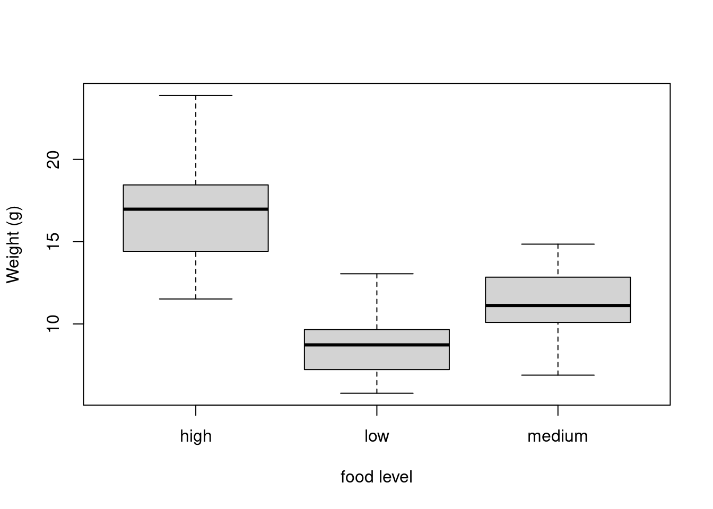
ggplot(unicorns, aes(y = weight, x = food)) +
geom_boxplot() +
labs(y = "Weight (g)", x = "food Concentration")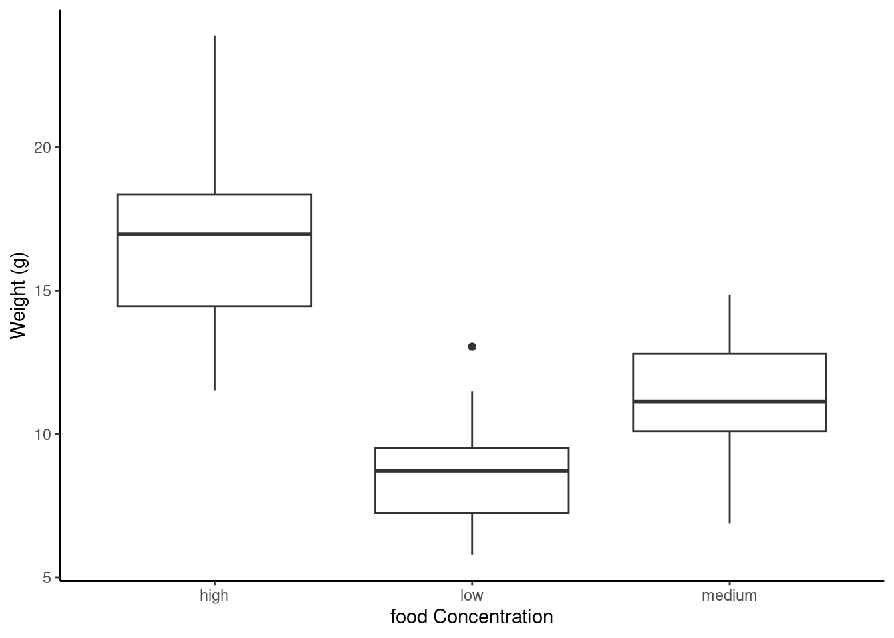
The factor levels are plotted in the same order defined by our factor variable food (often alphabetically). To change the order we need to change the order of our levels of the food factor in our data frame using the factor() function and then re-plot the graph. Let’s plot our boxplot with our factor levels going from low to high.
unicorns$food <- factor(unicorns$food,
levels = c("low", "medium", "high")
)
ggplot(unicorns, aes(y = weight, x = food)) +
geom_boxplot() +
labs(y = "Weight (g)", x = "food Concentration")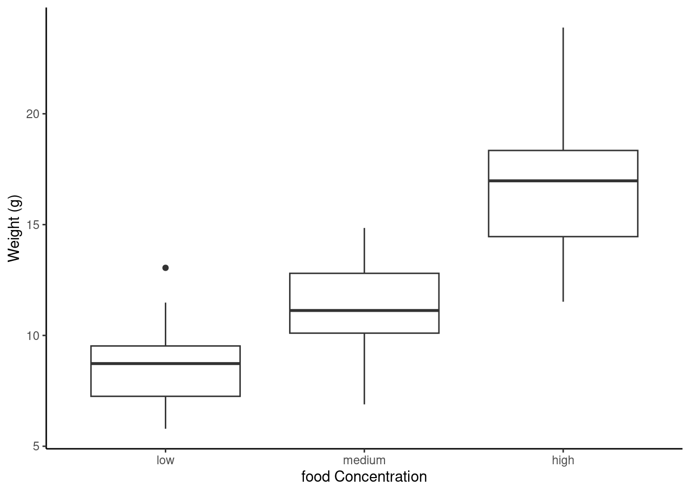
We can also group our variables by two factors in the same plot. Let’s plot our weight variable but this time plot a separate box for each food and parental care treatment (p_care) combination.
boxplot(weight ~ food * p_care,
data = unicorns,
ylab = "weight (g)", xlab = "food level"
)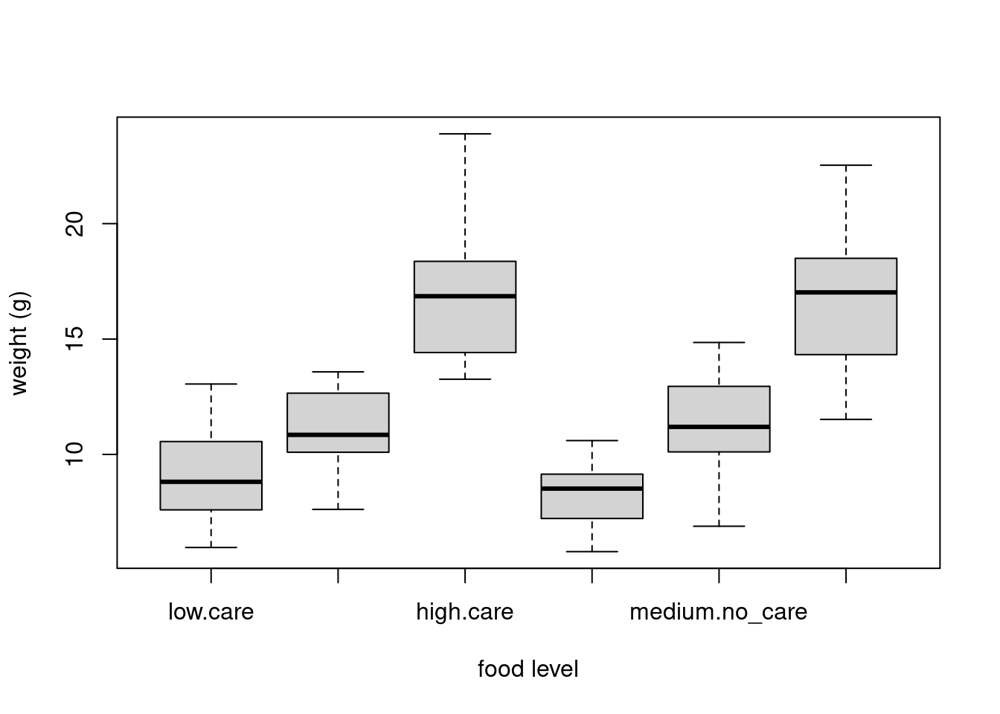
ggplot(unicorns, aes(y = weight, x = food)) +
geom_boxplot() +
labs(y = "Weight (g)", x = "food Concentration") +
facet_grid(.
~ p_care)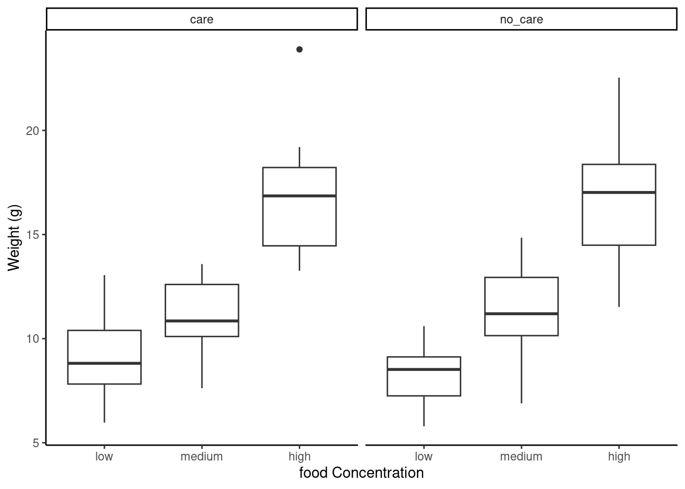
This plot looks much better in ggplot with the use of facet_grid allowing to make similar plots as a function of a third (or even fourth) variable.
4.3.4 Violin plots
Violin plots are like a combination of a boxplot and a kernel density plot (you saw an example of a kernel density plot in the histogram section above) all rolled into one figure. We can create a violin plot in R using the vioplot() function from the vioplot package. You’ll need to first install this package using install.packages('vioplot') function as usual. The nice thing about the vioplot() function is that you use it in pretty much the same way you would use the boxplot() function. We’ll also use the argument col = "lightblue" to change the fill colour to light blue.
library(vioplot)
vioplot(weight ~ food,
data = unicorns,
ylab = "weight (g)", xlab = "food Concentration",
col = "lightblue"
)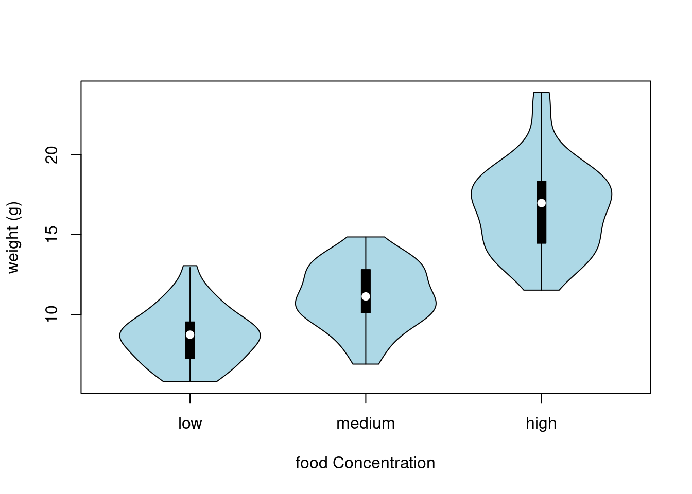
In the violin plot above we have our familiar boxplot for each food level but this time the median value is represented by a white circle. Plotted around each boxplot is the kernel density plot which represents the distribution of the data for each food level.
ggplot(unicorns, aes(y = weight, x = food)) +
geom_violin() +
geom_boxplot(width = 0.1) +
labs(y = "Weight (g)", x = "food Concentration")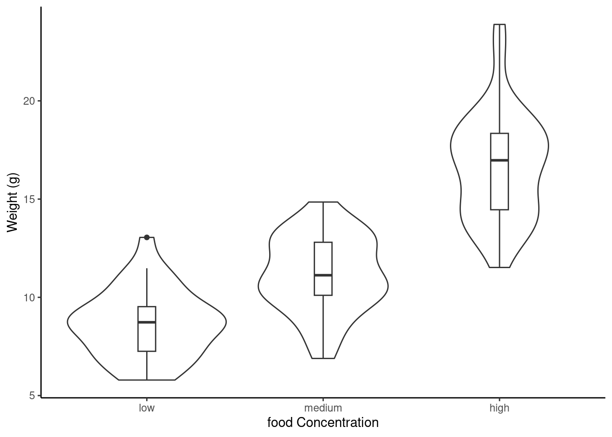
4.3.5 Dot charts
Identifying unusual observations (aka outliers) in numeric variables is extremely important as they may influence parameter estimates in your statistical model or indicate an error in your data. A really useful (if undervalued) plot to help identify outliers is the Cleveland dotplot. You can produce a dotplot in R very simply by using the dotchart() function.
dotchart(unicorns$height)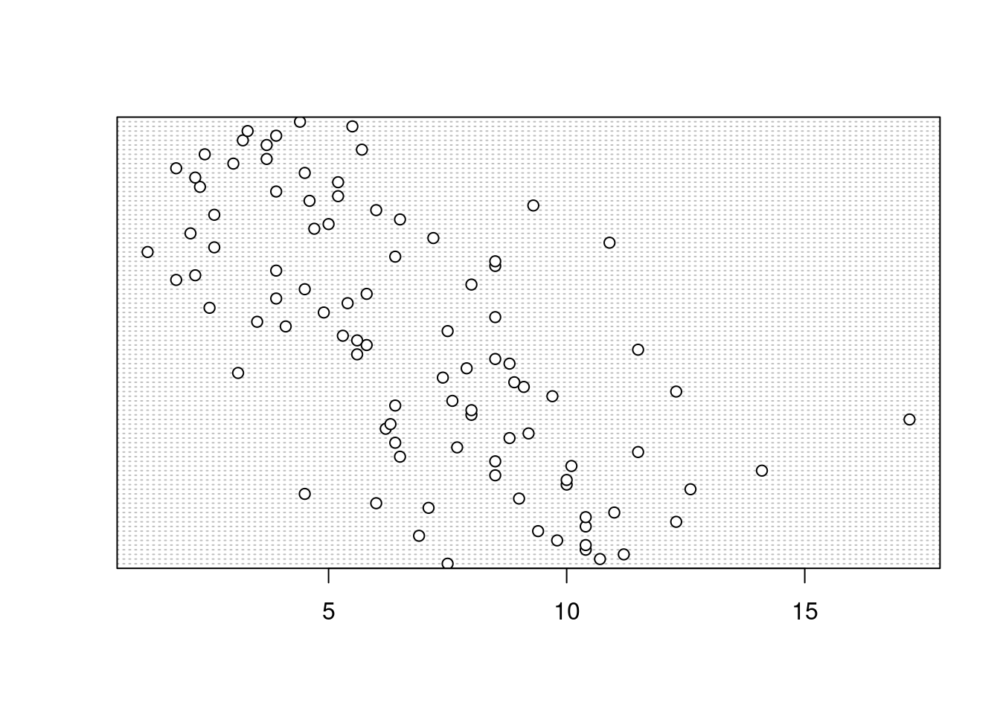
In the dotplot above the data from the height variable is plotted along the x axis and the data is plotted in the order it occurs in the unicorns data frame on the y axis (values near the top of the y axis occur later in the data frame with those lower down occurring at the beginning of the data frame). In this plot we have a single value extending to the right at about 17 cm but it doesn’t appear particularly large compared to the rest. An example of a dotplot with an unusual observation is given below.
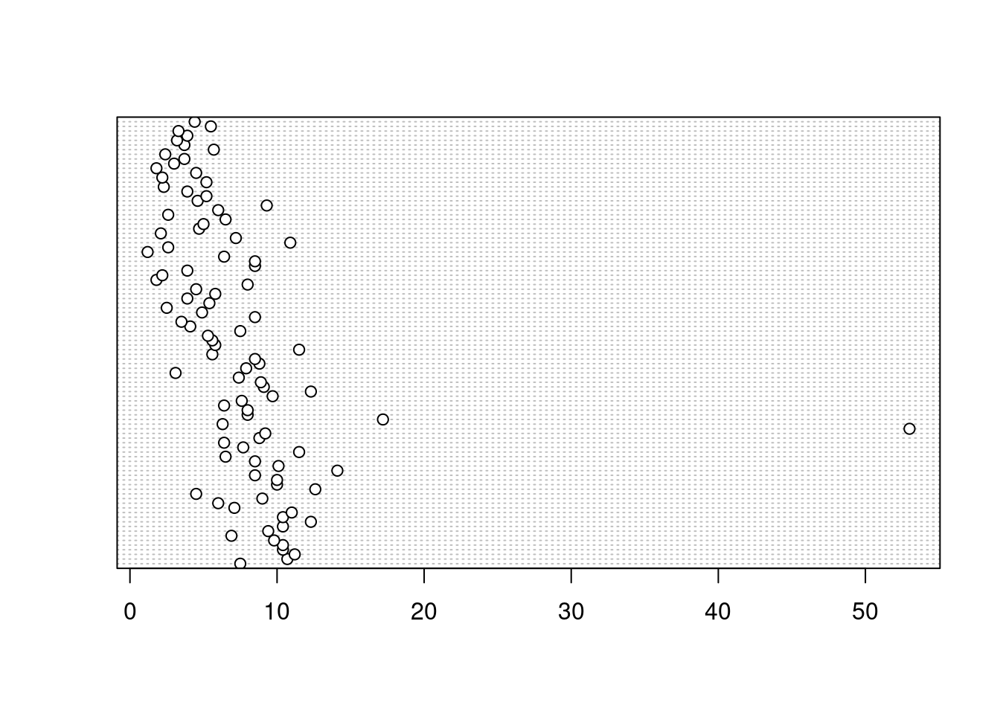
We can also group the values in our height variable by a factor variable such as food using the groups = argument. This is useful for identifying unusual observations within a factor level that might be obscured when looking at all the data together.
dotchart(unicorns$height, groups = unicorns$food)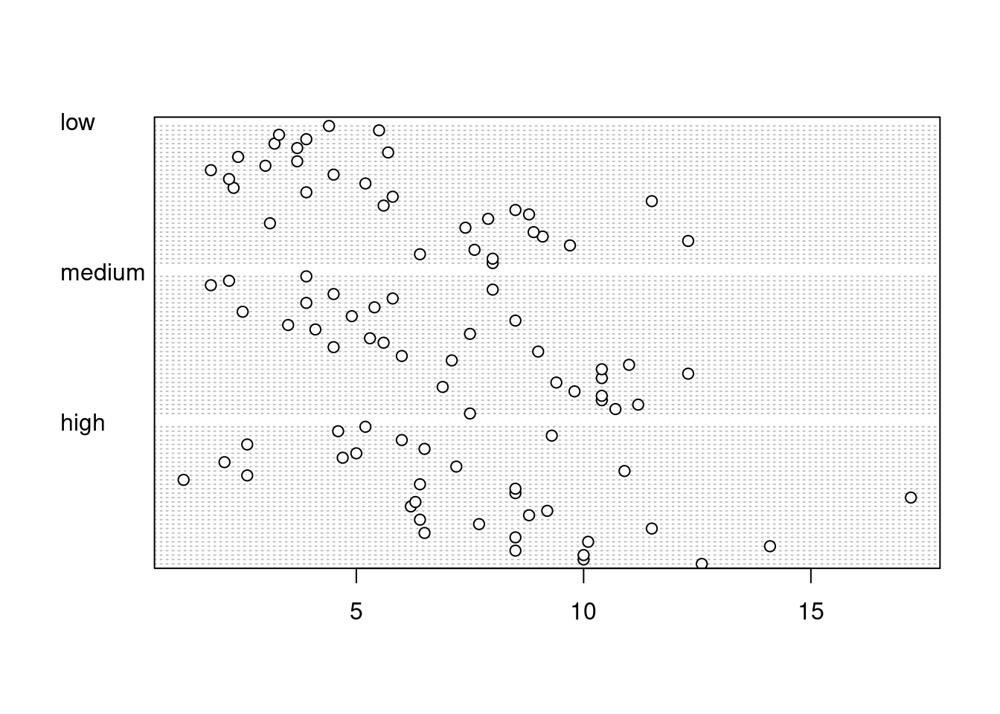
ggdotchart(data = unicorns, x = "height", y = "food")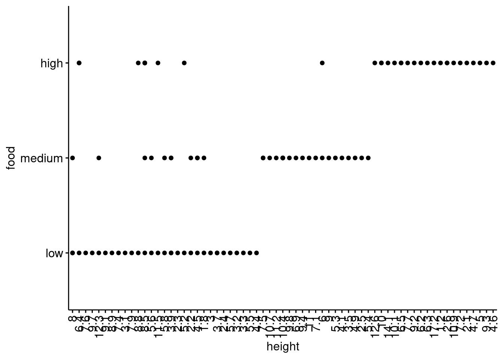
4.3.6 Pairs plots
Previously in this Chapter we used the plot() function to create a scatterplot to explore the relationship between two numeric variables. With datasets that contain many numeric variables, it’s often handy to create multiple scatterplots to visualise relationships between all these variables. We could use the plot() function to create each of these plot individually, but a much easier way is to use the pairs() function. The pairs() function creates a multi-panel scatterplot (sometimes called a scatterplot matrix) which plots all combinations of variables. Let’s create a multi-panel scatterplot of all of the numeric variables in our unicorns data frame. Note, you may need to click on the ‘Zoom’ button in RStudio to display the plot clearly.
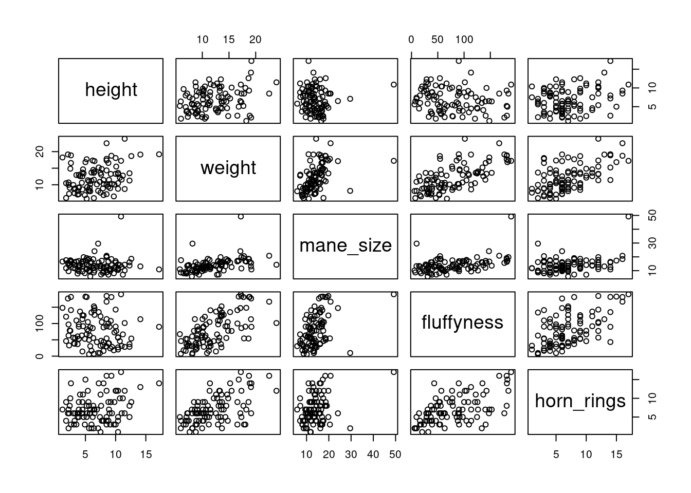
# or we could use the equivalent
# pairs(unicorns[, 4:8])Interpretation of the pairs plot takes a bit of getting used to. The panels on the diagonal give the variable names. The first row of plots displays the height variable on the y axis and the variables weight, mane_size, fluffyness and unicorns on the x axis for each of the four plots respectively. The next row of plots have weight on the y axis and height, mane_size, fluffyness and unicorns on the x axis. We interpret the rest of the rows in the same way with the last row displaying the unicorns variable on the y axis and the other variables on the x axis. Hopefully you’ll notice that the plots below the diagonal are the same plots as those above the diagonal just with the axis reversed.
To do pairs plot with ggplot, you nee the ggpairs()function from GGallypackage. The output is quite similar but you have only the lower part of the matrix of plots, you get a density plot on the diagonal and the correlations on the upper part of the plot.
ggpairs(unicorns[, c(
"height", "weight", "mane_size",
"fluffyness", "horn_rings"
)])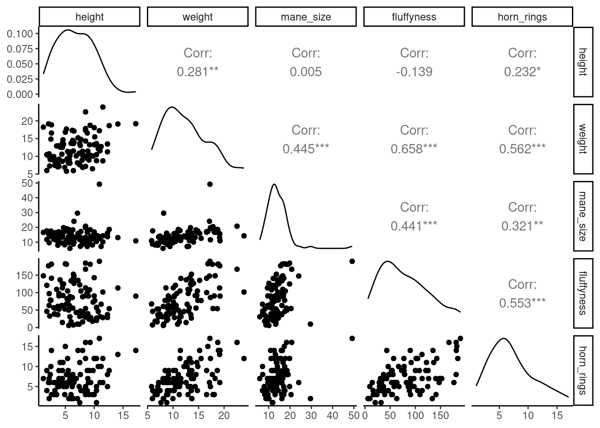
The pairs() function can be tweak to do similar things and more but is more involved. Have a lok at the great help file for the pairs() function (?pairs)which provide all the details to do something like the plot below.
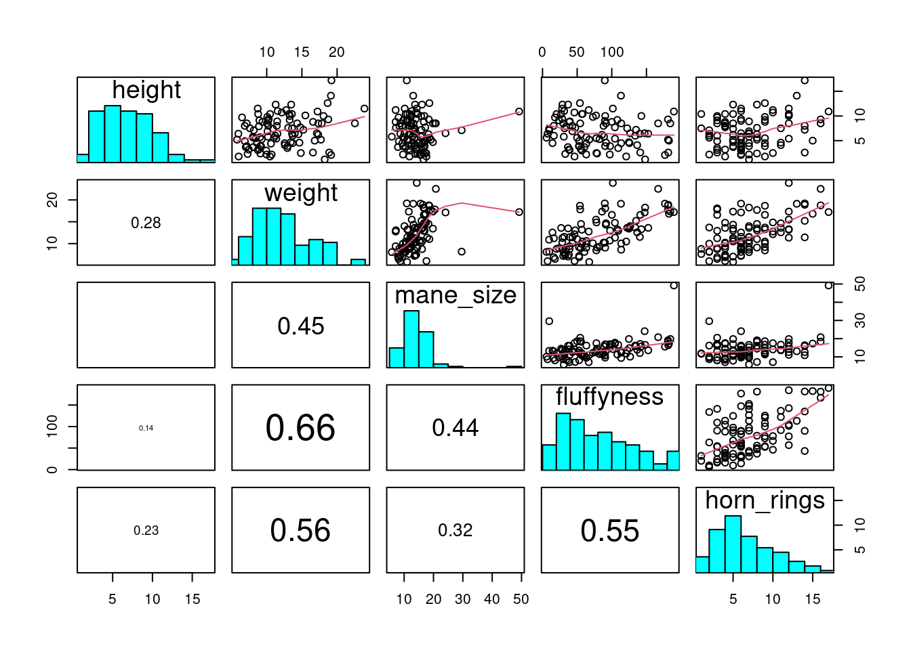
4.3.7 Coplots
When examining the relationship between two numeric variables, it is often useful to be able to determine whether a third variable is obscuring or changing any relationship. A really handy plot to use in these situations is a conditioning plot (also known as conditional scatterplot plot) which we can create in R by using the coplot() function. The coplot() function plots two variables but each plot is conditioned (|) by a third variable. This third variable can be either numeric or a factor. As an example, let’s look at how the relationship between the number of unicorns (unicorns variable) and the weight of unicorns changes dependent on mane_size. Note the coplot() function has a data = argument so no need to use the $ notation.
coplot(horn_rings ~ weight | mane_size, data = unicorns)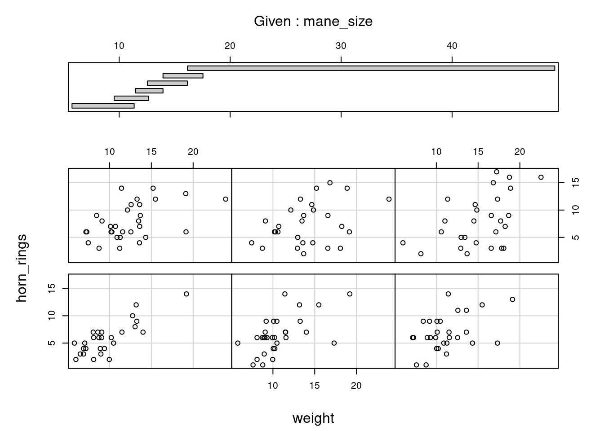
gg_coplot(unicorns,
x = weight, y = horn_rings,
faceting = mane_size
)`geom_smooth()` using formula = 'y ~ x'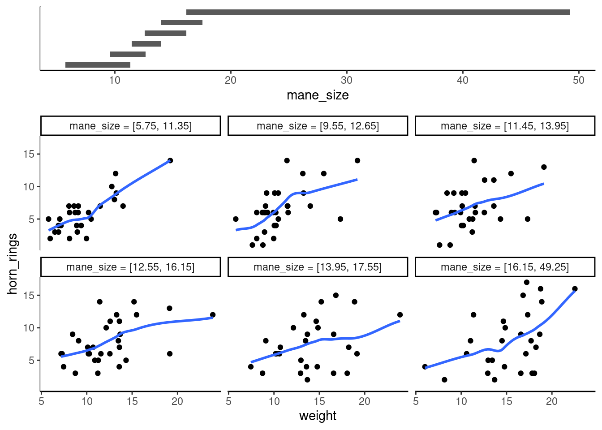
It takes a little practice to interpret coplots. The number of unicorns is plotted on the y axis and the weight of unicorns on the x axis. The six plots show the relationship between these two variables for different ranges of leaf area. The bar plot at the top indicates the range of leaf area values for each of the plots. The panels are read from bottom left to top right along each row. For example, the bottom left panel shows the relationship between number of unicorns and weight for unicorns with the lowest range of leaf area values (approximately 5 - 11 cm2). The top right plot shows the relationship between unicorns and weight for unicorns with a leaf area ranging from approximately 16 - 50 cm2. Notice that the range of values for leaf area differs between panels and that the ranges overlap from panel to panel. The coplot() function does it’s best to split the data up to ensure there are an adequate number of data points in each panel. If you don’t want to produce plots with overlapping data in the panel you can set the overlap = argument to overlap = 0
You can also use the coplot() function with factor conditioning variables. With gg_coplot() you need to first set the factor as numeric before plotting and specify overlap=0. For example, we can examine the relationship between unicorns and weight variables conditioned on the factor food. The bottom left plot is the relationship between unicorns and weight for those unicorns in the low food treatment. The top left plot shows the same relationship but for unicorns in the high food treatment.
coplot(horn_rings ~ weight | food, data = unicorns)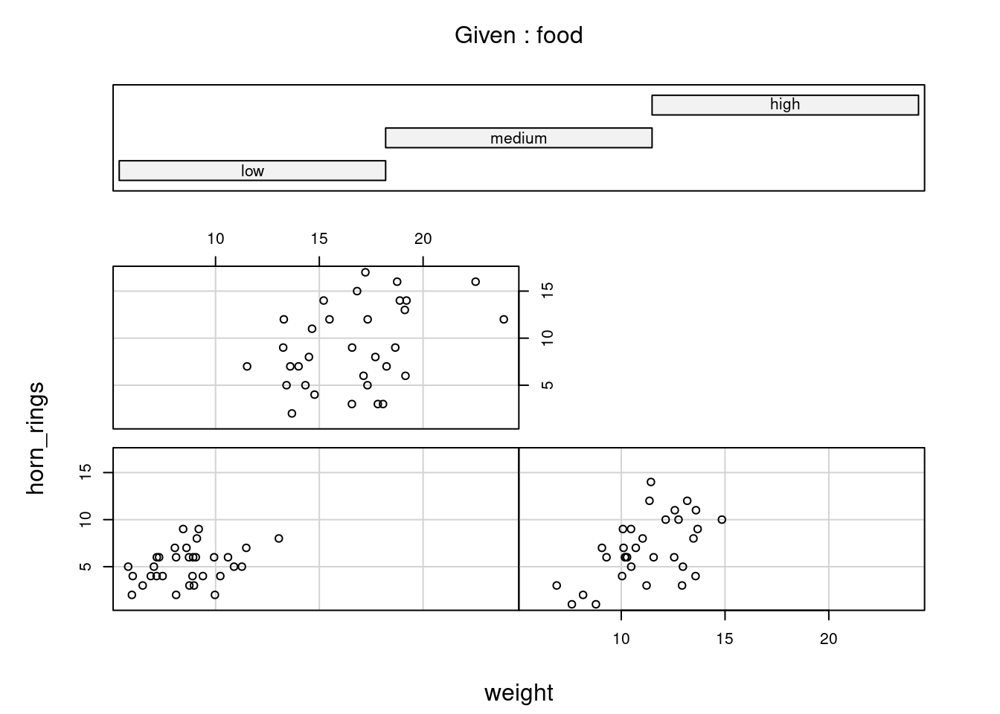
unicorns <- mutate(unicorns, food_num = as.numeric(food))
gg_coplot(unicorns,
x = weight, y = horn_rings,
faceting = food_num, overlap = 0
)`geom_smooth()` using formula = 'y ~ x'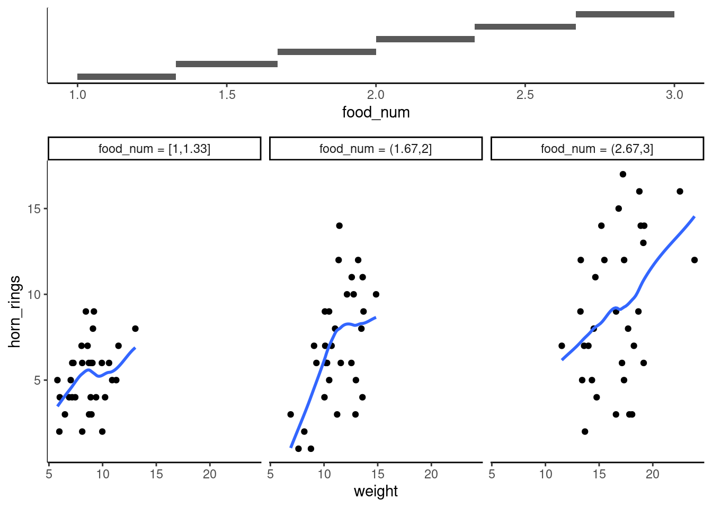
4.3.8 Summary of plot function
| Graph type | ggplot2 | Base R function |
|---|---|---|
| scatterplot | geom_point() |
plot() |
| frequency histogram | geom_histogram() |
hist() |
| boxplot | geom_boxplot() |
boxplot() |
| Cleveland dotplot | ggdotchart() |
dotchart() |
| scatterplot matrix | ggpairs() |
pairs() |
| conditioning plot | gg_coplot() |
coplot() |
Hopefully, you’re getting the idea that we can create really informative exploratory plots quite easily using either base R or ggplot graphics. Which one you use is entirely up to you (that’s the beauty of using R, you get to choose) and we happily mix and match to suit our needs. In the next section we cover how to customise your base R plots to get them to look exactly how you want.
4.4 Multiple graphs
4.4.1 Base R
In base R, one of the most common methods to plot multiple graphs is to use the main graphical function par() to split the plotting device up into a number of defined sections using the mfrow = argument. With this method, you first need to specify the number of rows and columns of plots you would like and then run the code for each plot. For example, to plot two graphs side by side we would use par(mfrow = c(1, 2)) to split the device into 1 row and two columns.
par(mfrow = c(1, 2))
plot(unicorns$weight, unicorns$fluffyness,
xlab = "weight",
ylab = "Fluffyness"
)
boxplot(fluffyness ~ food, data = unicorns, cex.axis = 0.6)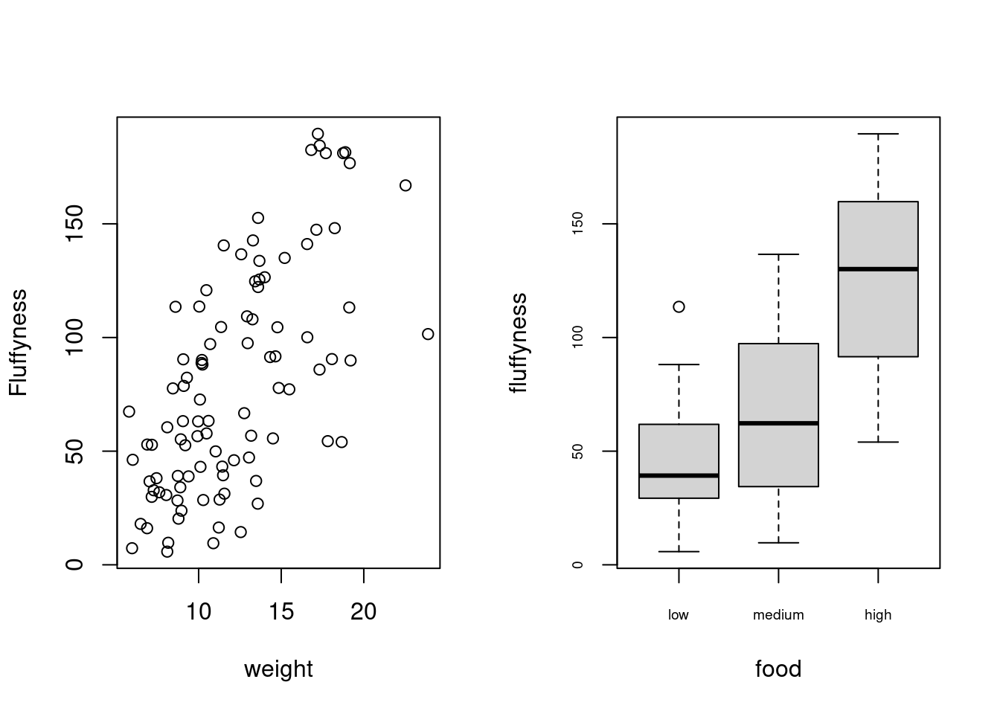
Once you’ve finished making your plots don’t forget to reset your plotting device back to normal with par(mfrow = c(1,1)).
4.4.2 ggplot
Using ggplot in addition to the facet_grid() and facet_wrap functions allowing to easily repeat and organise multiple plots as a function of specific variables, there are multiple way of organising multiple ggplot together. The approach we recommend is using the package patchwork.
First you will need to install (if you don’t have it yet) and make the patchwork 📦 package available.
install.packages("patchwork")
library(patchwork)An important note: For those who have used base R to produce their figures and are familiar with using par(mfrow = c(2,2)) (which allows plotting of four figures in two rows and two columns) be aware that this does not work for ggplot2 objects. Instead you will need to use either the patchwork package or alternative packages such as gridArrange or cowplot or covert the ggplot2 objects to grobs.
To plot both of the plots together we need to assign each figure to a separate object and then use these objects when we use patchwork.
So we can generate 2 figures and assign them to objects. As you can see, the figures do not appear in the plot window. They will appear only when you call the object.
first_figure <- ggplot(
aes(x = height, y = fluffyness, color = food),
data = unicorns
) +
geom_point() +
geom_smooth(method = "lm", se = FALSE) +
facet_grid(block ~ p_care)
second_figure <- ggplot(
aes(x = weight, y = fluffyness, color = food),
data = unicorns
) +
geom_point() +
geom_smooth(method = "lm", se = FALSE) +
facet_grid(block ~ p_care)We have two immediate and simple options with patchwork; arrange figures on top of each other (specified with a /) or arrange figures side-by-side (specified with either a + or a |). Let’s try to plot both figures, one on top of the other.
first_figure / second_figure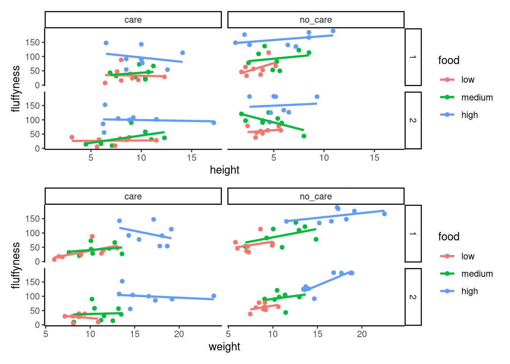
Play around: Try to create a side-by-side version of the above figure (hint: try the other operators).
We can take this one step further and assign nested patchwork figures to an object and use this in turn to create labels for individuals figures.
nested_compare <- first_figure / second_figure
nested_compare +
plot_annotation(tag_levels = "A", tag_suffix = ")")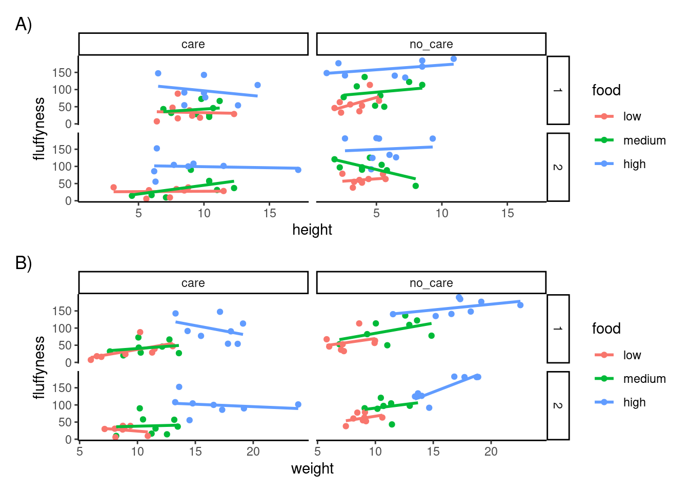
4.5 Customising ggplots
Went for a walk to be edited 🦄
4.6 Exporting plots
Creating plots in R is all well and good but what if you want to use these plots in your thesis, report or publication? One option is to click on the ‘Export’ button in the ‘Plots’ tab in RStudio. You can also export your plots from R to an external file by writing some code in your R script. The advantage of this approach is that you have a little more control over the output format and it also allows you to generate (or update) plots automatically whenever you run your script. You can export your plots in many different formats but the most common are, pdf, png, jpeg and tiff.
By default, R (and therefore RStudio) will direct any plot you create to the plot window. To save your plot to an external file you first need to redirect your plot to a different graphics device. You do this by using one of the many graphics device functions to start a new graphic device. For example, to save a plot in pdf format we will use the pdf() function. The first argument in the pdf() function is the filepath and filename of the file we want to save (don’t forget to include the .pdf extension). Once we’ve used the pdf() function we can then write all of the code we used to create our plot including any graphical parameters such as setting the margins and splitting up the plotting device. Once the code has run we need to close the pdf plotting device using the dev.off() function.
pdf(file = "output/my_plot.pdf")
par(mar = c(4.1, 4.4, 4.1, 1.9), xaxs = "i", yaxs = "i")
plot(unicorns$weight, unicorns$fluffyness,
xlab = "weight (g)",
ylab = expression(paste("shoot area (cm"^"2", ")")),
xlim = c(0, 30), ylim = c(0, 200), bty = "l",
las = 1, cex.axis = 0.8, tcl = -0.2,
pch = 16, col = "dodgerblue1", cex = 0.9
)
text(x = 28, y = 190, label = "A", cex = 2)
dev.off()If we want to save this plot in png format we simply use the png() function in more or less the same way we used the pdf() function.
png("output/my_plot.png")
par(mar = c(4.1, 4.4, 4.1, 1.9), xaxs = "i", yaxs = "i")
plot(unicorns$weight, unicorns$fluffyness,
xlab = "weight (g)",
ylab = expression(paste("shoot area (cm"^"2", ")")),
xlim = c(0, 30), ylim = c(0, 200), bty = "l",
las = 1, cex.axis = 0.8, tcl = -0.2,
pch = 16, col = "dodgerblue1", cex = 0.9
)
text(x = 28, y = 190, label = "A", cex = 2)
dev.off()Other useful functions are; jpeg(), tiff() and bmp(). Additional arguments to these functions allow you to change the size, resolution and background colour of your saved images. See ?png for more details.
ggplot2 📦 provide a really useful function ggsave() function which simplify saving plots a lot but works only for ggplots.
After producing a plot and seeing it in your IDE, you can simply run ggsave() with the adequate argument to save the last ggplot produced. You can of course, also, specify which plot to save.
ggsave("file.png")